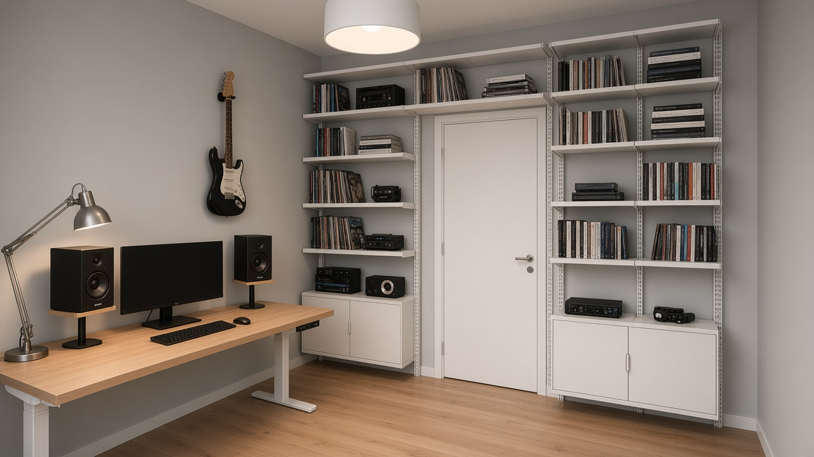
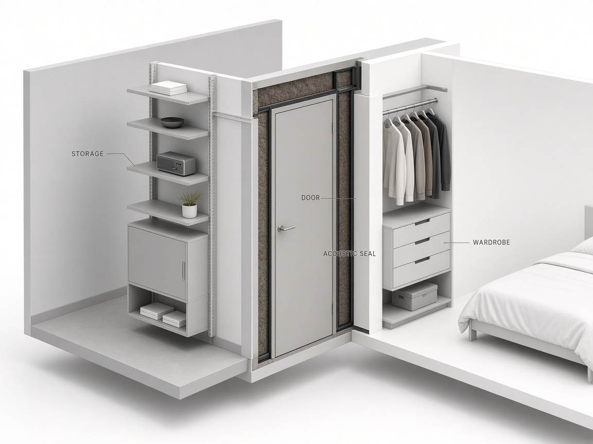
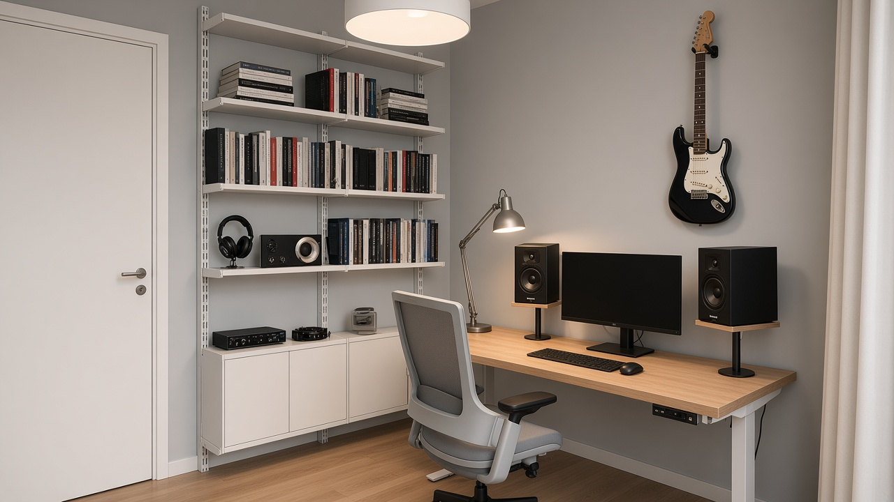
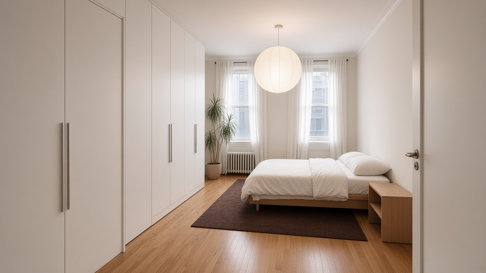
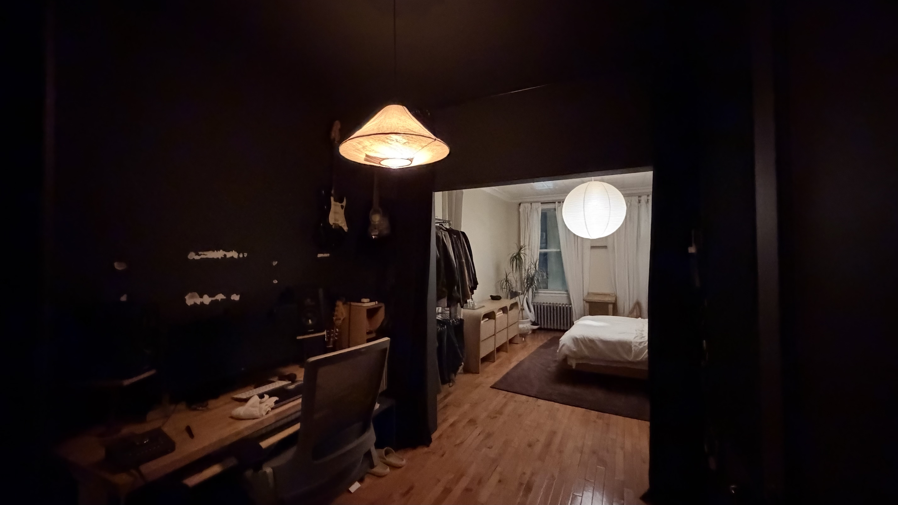
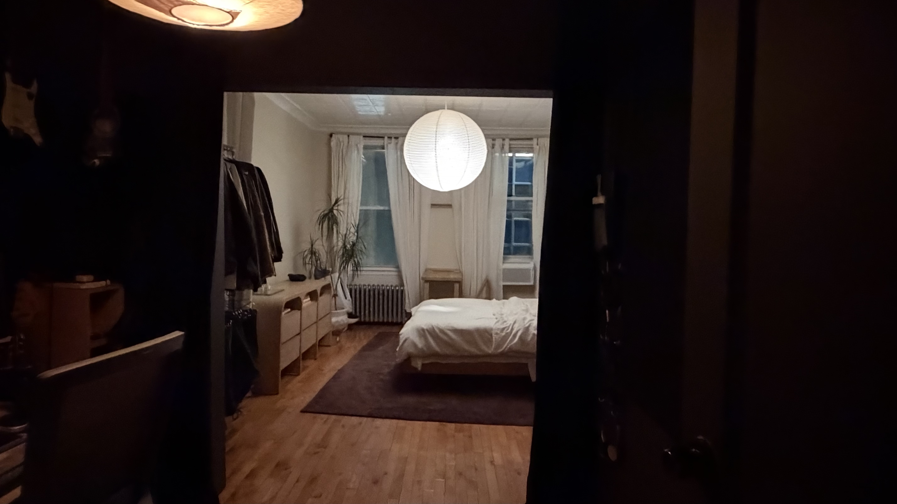
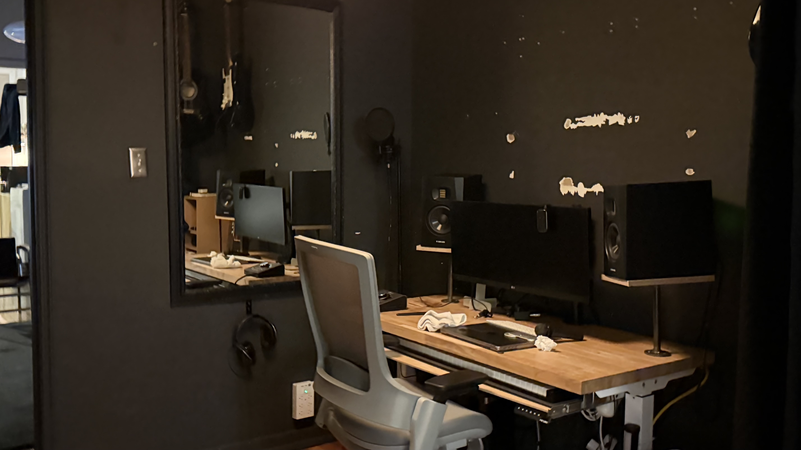

Stop
- Black “cave” theater
- Curtain as architecture
- Open garment rail
- Floor stacks and side shelves
System · Dieter Rams
One thickened partition does three jobs: night seal, studio storage, bedroom wardrobe. Floor stays clear. Gear has a place. Sleep stays quiet.

A blank sealed wall wastes the most valuable line in the apartment. A curtain wastes the night. Freestanding shelves and an open clothes rack waste the floor. The suite needs one honest piece that works harder.
~35–45 cm thick wall in the bedroom opening. Insulation in the core. Door in the center. Storage on both faces. Nothing decorative — only useful.

Stud frame, mineral wool, double drywall where needed. Built to close light and speech — not to look heavy.
Flush solid-core leaf, quiet latch, perimeter seals, automatic bottom. Understandable: closed means night mode.
Aluminum uprights (606 language): shelves, cabinets, headphone hook, interface bay. Gear leaves the desk and the floor.
Full wardrobe in the same poche — hanging + drawers. Clothes stop living in the room. Floor returns to sleep.
Light, quiet, long-lasting. Tools visible only when useful.


Not more furniture — fewer objects doing more work.
The partition must exist for night isolation. Making it thick enough for shelves + wardrobe costs almost no extra floor — it reclaims the footprint of the freestanding bookcase and open rack.
Monitor, keyboard, Adams. Interface, headphones, books, cables live on the system wall. MIDI stays on the under-tray. The desk becomes useful again.
Cool grey / white walls enlarge the studio optically. Black gear stays honest as tools. Night isolation comes from the door seals — not from painting the room into a void.
Primary night path: hall → studio. Partition door stays closed. Bedroom floor stays a sleep field, not a corridor.
Rams’ criteria as decisions — not decoration.
| Principle | In this suite |
|---|---|
| Innovative | Partition is structure + storage + seal — one invention, three uses |
| Useful | Night work without waking a partner; gear and clothes have homes |
| Aesthetic | Order and proportion; beauty from clarity, not mood lighting |
| Understandable | Closed door = night mode; shelves show what they hold |
| Unobtrusive | Flush door, quiet palette — rooms don’t shout |
| Honest | Aluminum tracks, wood desk, black speakers as tools — no fake luxury |
| Long-lasting | Modular bays reconfigure as the kit changes; no trend finish |
| Thorough | Seals, sweep, cable routing, lamp placement — detail is respect |
| Environmentally friendly | Keep the desk/chair/Adams; build once; buy less freestanding furniture |
| As little as possible | Remove curtain, rack, floor stacks, scarred black theater |
Measure once. Build the poche. Hang the system. Clear the floor.
Target depth that fits wardrobe hanging on one side and shelf cabinets on the other (~35–45 cm). Confirm lease. Plan door swing and hall entry path.
Stud wall in the cutout. Mineral wool. Drywall both faces. Rough opening for one flush solid door.
Solid-core flush door, acoustic perimeter seals, automatic bottom. Night light test before painting celebrations.
Studio: aluminum uprights + shelves/cabinets. Bedroom: wardrobe carcass + flush doors. Paint light grey / white. Repair old black wall to the new calm.
Desk empties. Freestanding shelf and open rack leave. Guitar on one hook. Task lamp + dimmable disc. Headphones after bedtime.
System parts — not styling props.
| # | Part | Role |
|---|---|---|
| 1 | Studs, mineral wool, drywall | Partition core |
| 2 | Solid flush door + acoustic seal kit + bottom | Night isolation |
| 3 | Aluminum upright / E-track modular shelving | Studio face storage (606 language) |
| 4 | Wardrobe carcass + flush doors | Bedroom face storage |
| 5 | Light grey / white paint | Optical volume, long-lasting calm |
| 6 | Architect task lamp + dimmable ceiling disc | Useful light only |
| 7 | Under-desk cable tray | Thorough detail |
The opening the system fills.


